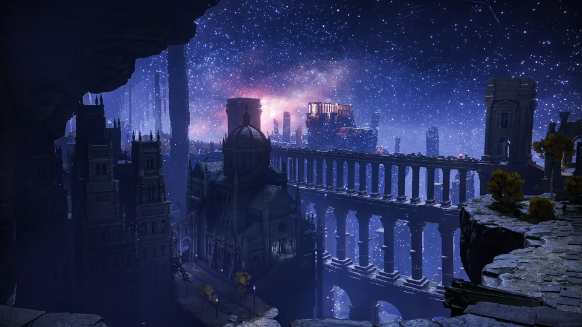

The Lands Between
The Lands Between is the world where Elden Ring takes place. It was once guided by the Erdtree and the Golden Order, but after the Elden Ring was shattered, the world fell into war and ruin.
The story of Elden Ring is about broken power, cursed families, forgotten wars, and a world waiting for someone strong enough to become Elden Lord.
The Lands Between is the world where Elden Ring takes place. It was once guided by the Erdtree and the Golden Order, but after the Elden Ring was shattered, the world fell into war and ruin.
The Elden Ring is not a normal ring. It is a source of power made from Great Runes. It controls the rules of the world, including life, death, order, and power.
The player is one of the Tarnished. The Tarnished were banished long ago, but after the Shattering they were called back to collect Great Runes and try to become Elden Lord.
Queen Marika becomes the god-like ruler of the Lands Between, and the Golden Order becomes the main power in the world.
Marika removes the Rune of Death from the Elden Ring. This makes true death rare and changes how the world works.
Godwyn the Golden is killed by assassins using stolen power from the Rune of Death. This is one of the biggest disasters in the lore.
The Elden Ring breaks. The demigods take Great Runes and fight each other, leaving the Lands Between destroyed and divided.

Elden Ring does not explain everything directly. A lot of the story is hidden in item descriptions, boss names, locations, and small details in the world. That makes the player piece the story together while exploring.
The main idea is simple though: the world is broken, the old rulers failed, and the Tarnished has to decide what kind of order should come next.